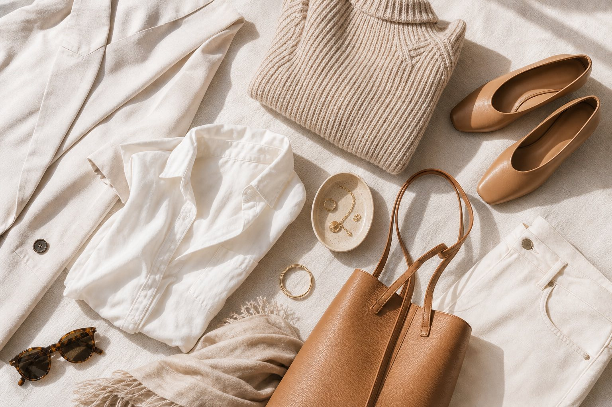

Wardrobe
What to wear for bright, editorial photos
Simple palettes, textures that photograph well, and a checklist for choosing pieces you already love.
Read moreA calm, guided experience built around flattering light and easy prompts — images that feel cinematic, clean, and unmistakably you.
Quiet confidence on a fast day. We capture honest moments and elevated portraits — with timelines that protect the experience.
Coverage that feels cinematic and effortless. We capture the room, the people, and the small details that make the night yours.
Launch-ready images built for web, press, and paid. We plan for consistency across scenes so your brand looks intentional everywhere.
Elevated still life and product detail images with studio-level polish — built for ecommerce, lookbooks, and modern ad creative.
Simple prompts, beautiful light, and space for real connection — photographed with warmth and a refined, print-first finish.
We plan around light, movement, and story — then keep the session day simple. Direction is gentle and specific, so you never feel “posed.”
Expect clear communication, timeline-friendly pacing, and an easy gallery experience. We help you choose favorites and prep images for print and web.

Wardrobe
Simple palettes, textures that photograph well, and a checklist for choosing pieces you already love.
Read more
Locations
How we choose locations that keep your set calm, private, and beautifully lit at the right time of day.
Explore
Session Day
Pacing tips for portraits, events, and weddings — so you get the photos without losing the day.
See the guideResolution, crops, paper finishes, and how we deliver files that stay gorgeous off-screen.
LearnContact
We’ll reply with availability, timing recommendations, and a simple plan. No pressure — just clarity.
Share your goal and timeframe. We’ll reply with a light-first plan and next steps.
Static preview: this form is not wired to email on GitHub Pages. Test delivery inside WordPress using the theme.
Yes. Share the location and timeframe, and we’ll confirm travel logistics and planning lead time.
Absolutely. Tell us your goal and how you’ll use the images — we’ll recommend the right structure.